Dark matter in neutron stars
Simulating
the invisible
What we know about dark matter, how a neutron star captures it one collision at a time, and what state the captured particles end up in.
Outline
One problem, two papers, one code
I
The missing mass
How the problem was found, why the evidence holds, the ideas most explored today, and what the experiments have ruled out. Why look at a neutron star at all?
From Zwicky to the neutrino fog
II
OBSCURA: every collision
A relativistic Monte Carlo of capture that follows each particle through the interior metric, and reduces exactly to the optical-depth closure. What does the closure miss?
de Lima & Rueda, A Monte Carlo relativistic framework for dark matter capture by neutron stars (in preparation)
III
Degeneracy before self-gravity
After capture: a classical tracer, a degenerate Fermi gas, or a dark component? Two diagnostics, S for gravity and Θ for statistics, and a map of their thresholds.
de Lima & Rueda, Degeneracy Before Self-Gravity: Dark Matter Regimes in Neutron Stars (draft)
I
Part one
The missing
mass
Ninety years of evidence that most of the matter in the Universe is made of something we have never seen in a laboratory: how it was found, what it could be, and what has been ruled out.
1933 · The Coma cluster
Seven galaxies, far too fast
| 800 galaxies of 10⁹ M☉ within 10²⁴ cm | 80 km/s |
| Doppler spread he measured | ≳ 1000 km/s |
| density required | ≥ 400 × luminous |
“…dark matter exists in much greater density than luminous matter.”
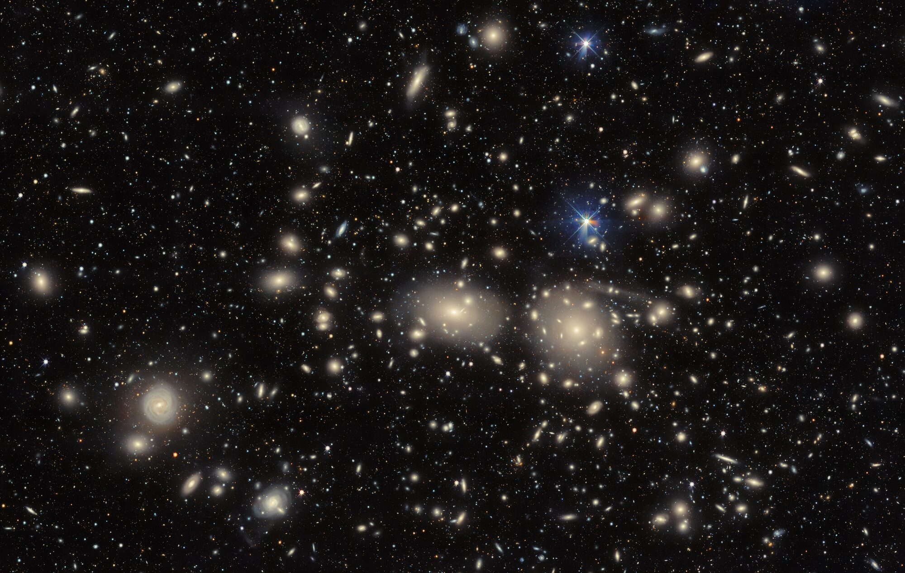
CTIO/NOIRLab · CC BY 4.0What survived
Today's H₀ is seven times smaller than his, and X-rays later found hot gas outweighing the galaxies. The excess shrinks and stays: baryons are about one sixth of a cluster.
1970 – 1980 · Rotation curves
Galaxies that refuse to slow down
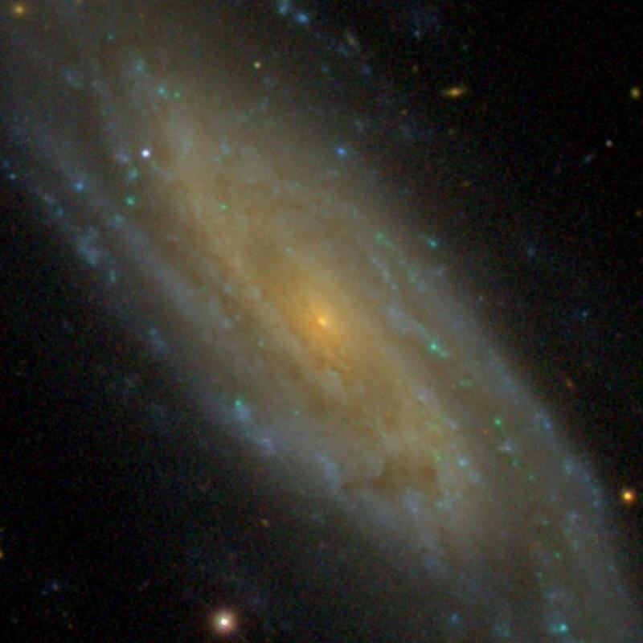
SDSS · CC BY 4.0Vera Rubin
with Kent Ford, optical spectra from 1970; Albert Bosma in 21 cm, beyond the stars.
Rubin & Ford 1970; Rubin, Ford & Thonnard 1978, 1980; Bosma 1978. Data: SPARC, Lelli, McGaugh & Schombert, AJ 152, 157 (2016).
2006 · The Bullet Cluster
Mass that left the gas behind
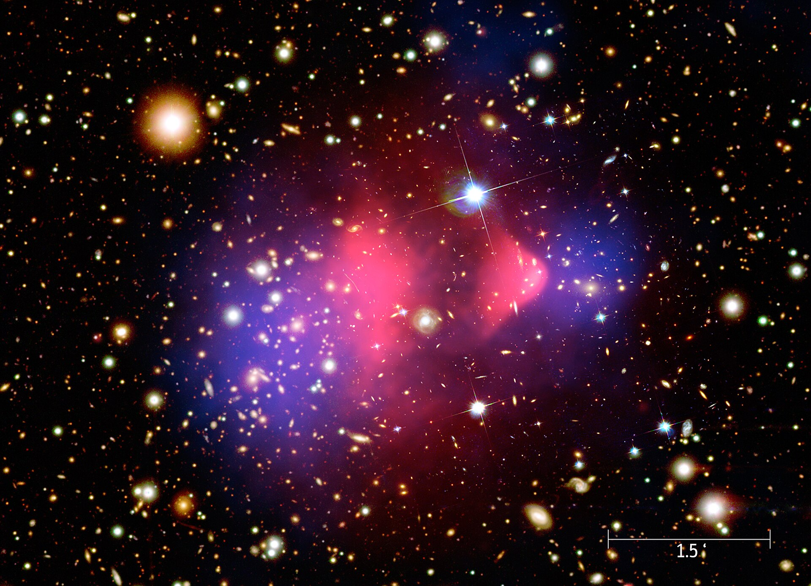
NASA/CXC/M. Weiss · public domainTwo clusters went through each other. The gas (pink, X-rays), which holds most of the baryons, was braked. The lensing mass (blue) kept going with the galaxies.
8σ offset
Between the total mass and the baryons, and it “cannot be explained with an alteration of the gravitational force law.” Clowe et al. 2006
72 collisions later
Dark matter stays with the stars: σ/m < 0.47 cm²/g at 95%. It barely collides, even with itself. Harvey et al. 2015
380 000 years after the Big Bang
The early Universe weighs it
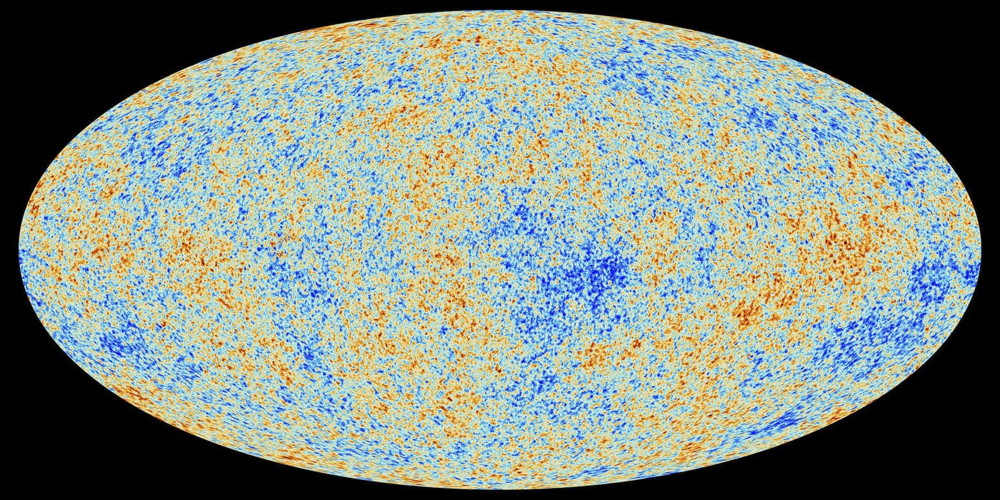
ESA, Planck · CC BY 4.0Baryons load the photon fluid: compression peaks rise over rarefaction peaks.
Dark matter feels no pressure, so its wells do not decay. Without it, the first peak more than doubles.
Ωbh² = 0.0224 ± 0.0001Planck 2018
Three minutes · 380 000 years · today
It cannot be atoms
Same primordial fluctuations. With dark matter, δ ≈ 1.7 today; with baryons alone, δ ≈ 10⁻³: no galaxies.
Two clocks agree on the baryons
Primordial deuterium, (D/H)P = (2.527 ± 0.030)×10⁻⁵, fixes the baryon density at three minutes. It matches the CMB, 380 000 years later, within 2σ.
atoms 4.9%, so dark matter is about 85% of all matter · Planck 2018, h = 0.674
Not neutrinos either
Σmν < 0.12 eV makes them at most about 1% of the dark matter, and too hot. Nothing in the Standard Model fits.
The alternative
Or is gravity wrong?
v⁴ = GM a0MOND, Milgrom 1983: a₀ ≈ 1.2×10⁻¹⁰ m/s²
The regularity is real: in rotating galaxies, the baryons alone predict the acceleration. The MOND button in the rotation-curve panel uses exactly that relation, with no halo.
Any dark-matter theory has to explain it. But a theory of gravity has to work on every scale.
| Scale | Test | |
|---|---|---|
| Galaxies | 2693 points in 153 galaxies follow one relation with one constant | works |
| Wide binaries | Gaia DR3: Newton preferred at 19σ (Banik et al.), an anomaly at low g (Chae) | disputed |
| Clusters | Still short of mass by about a factor of 2, and in the Bullet the potential follows the galaxies | fails |
| GW170817 | Gravity and light arrive together: the end of “dark-matter emulators” | fails |
| CMB, P(k) | AeST fits both, with a new field that behaves as dust in the early Universe | at a price |
The candidates · ninety orders of magnitude
We know how much, not what
Bounds: ultralight scalars m > 2×10⁻²⁰ eV (Rogers & Peiris 2021) · Pauli, any fermion m ≥ 0.13 keV (Alvey et al. 2021) · thermal warm dark matter m > 5.7 keV (Iršič et al. 2024) · compact objects 10⁻⁸–10³ M☉ not the dominant component (OGLE, Mróz et al. 2024, 2025) · asteroid-mass window open (Gorton & Green 2024). Bright bands: the most explored today.
The most explored idea
The WIMP miracle
Ωh² = 0.12 needs ⟨σv⟩ ≈ 2.2×10⁻²⁶ cm³/s above 10 GeV (Steigman, Dasgupta & Beacom 2012).
Direct detection · 2010 – 2026
Four orders of magnitude, no WIMP
The fog has arrived
LZ, 5.7 t·yr: ⁸B solar neutrinos scattering coherently on xenon, at 4.5σ. The next limits must separate them from a signal.
The blind spot
Recoils fall as μ²v²/mA. Below a few GeV they drop under threshold: at 100 keV, about 1 μeV on xenon.
Limits: compiled by C. O'Hare. Fog: O'Hare, PRL 127, 251802 (2021). Best points: the papers' abstracts.
Axions
A particle invented for another problem
- QCD allows a CP-violating angle θ̄, yet the neutron's dipole moment gives |θ̄| ≲ 10⁻¹⁰.
- Peccei–Quinn: make θ̄ a field that relaxes to zero. Its quantum is the axion.
- Oscillating coherently since the QCD epoch, it behaves as cold dark matter.
- In a magnetic field a → γ: a tuned cavity collects photons of hν = mac².
Haloscopes reach the benchmark DFSZ line only around 3–5 μeV, a tenth of the range scanned.
Limits: C. O'Hare, AxionLimits (Zenodo 3932430). Sikivie 1983; Peccei & Quinn 1977; Weinberg 1978; Wilczek 1978.
The sky and the LHC
Hints, and what became of them
| Claim | Since | Where it stands | |
|---|---|---|---|
| DAMA/LIBRA annual modulation | 1998 | Same NaI target, no modulation: COSINE-100 + ANAIS-112 exclude it at 4.7σ (1–6 keV) and 3.5σ (2–6 keV) | refuted |
| XENON1T electron excess | 2020 | A 3.4σ solar-axion fit; gone in XENONnT, with a background five times lower | gone |
| 3.5 keV X-ray line | 2014 | XRISM sees no line in ten clusters; its limit is still five times above the XMM detection | fading |
| Galactic Centre γ-ray excess | 2009 | The photons are real; recent work leans to unresolved millisecond pulsars, but it is not settled | open |
| 20 GeV Milky Way halo excess | 2025 | Reproduced in Fermi data; in tension with dwarf galaxies and, in a preprint, with AMS-02 antiprotons | open |
| LHC missing energy | Run 1–3 | No established excess; no new particle at the weak scale so far | nothing |
The cleanest indirect targets stay dark too: dwarf galaxies put ⟨σv⟩ below the thermal value for m ≲ 100 GeV in quark and τ channels (Fermi-LAT 2015). Status as of November 2026.
The RAR model · Ruffini, Argüelles, Rueda
What if dark matter is a Fermi gas?
Take neutral fermions, gravity and the Pauli principle, and solve Einstein's equations at finite temperature. Nothing else.
1939
Oppenheimer & Volkoff
Pauli against gravity: a limit mass
1969
Ruffini & Bonazzola
self-gravitating quantum particles
1983–92
Ruffini & Stella; Ingrosso et al.
semi-degenerate, energy cutoff
2002
Bilić et al.
a Newtonian fermion ball at the Galactic Centre
2015
Ruffini, Argüelles & Rueda
core, plateau and halo in GR
2018
Argüelles et al.
the cutoff: a core at Sgr A*, a halo for the Galaxy
One particle
One distribution function and one fermion mass, from milliparsecs to a hundred kiloparsecs.
No new force
The pressure comes from quantum statistics and temperature. No interaction beyond gravity is needed.
The mass shows
Unlike cold dark matter, the particle mass sets the structure: a degenerate core shrinks as m−8/3.
The RAR model · the equations
Fermi–Dirac, with a way out
Not a guess: a maximum-entropy state of collisionless relaxation with evaporation.
Lynden-Bell 1967; Chavanis 2004; Ruffini, Argüelles & Rueda 2015; Argüelles et al., PDU 21, 82 (2018).
Tolman
eν/2 T = const: hotter deeper in the well
Klein
eν/2 (μ + mc²) = const: more degenerate deeper in
Energy along a geodesic
eν/2 (εc + mc²) = const: one conserved escape energy
The RAR model · solved live
One gas, three regimes
The RAR model · the core
A neutron star, rescaled
| Ideal fermions | Neutrons | 100 keV |
|---|---|---|
| Particle | 939.6 MeV | 100 keV |
| Limit mass | 0.71 M☉ | 6.3×10⁷ M☉ |
| Radius there | 9.5 km | 5.6 AU |
| Central density | 3.6×10¹⁵ g/cm³ | 0.46 g/cm³ |
| Radius / RS | 4.5 | 4.5 |
Lighter than water, and at the edge of collapse. Past the limit, a black-hole seed with no star involved.
Argüelles et al. 2018; Krut, Argüelles & Chavanis 2025; Argüelles et al. 2024.
The RAR model · the Galactic Centre
A black hole, or a core?
| Test | Result | |
|---|---|---|
| Rotation curve | One continuous profile, with baryons, from the core to the Gaia DR3 curve | works |
| S2 and G-source orbits | Core and black hole differ by less than 1% in orbital parameters; no conclusive preference | undecided |
| S2 precession | Retrograde below 56 keV, prograde above. GRAVITY's prograde signal points to m ≳ 57 keV, with under 0.1% of the core inside the orbit | bounds m |
| Stability | Stable core–halo solutions with a 4.2×10⁶ M☉ core exist only for 194–387 keV | bounds m |
| Images | Central depression and a ring, down to about 35 μas, but no photon ring: the key difference from a black hole | next test |
| Collapse | Cores past the limit become black-hole seeds, sooner if baryons accrete onto them | prediction |
Our 100 keV is a capture benchmark, not a claim about Sgr A*: it sits inside the 48–345 keV of the halo fits, below the stable window for a core that replaces the black hole. Status as of November 2026.
Argüelles et al. 2018; Becerra-Vergara et al. 2020, 2021; Argüelles et al. 2022; Pelle et al. 2024; Krut, Argüelles & Chavanis 2025; Crespi et al. 2026.
The premise
A neutron star is a dark-matter detector
As it crosses the Galaxy, a neutron star sweeps up dark matter: its potential well focuses the particles, its matter stops them.
A deep well
Escape speed at the surface √(2GM/R) = 0.59 c for 1.4 M☉ and 11.7 km. Slow halo particles are bent toward the star from a thousand radii away.
A dense target
nb ≈ 5×10³⁸ cm⁻³ at the centre: with σ = 10⁻⁴⁴ cm² a particle meets τ ≈ 6–9 collisions in one crossing.
An old, cold star
What accumulates can heat it, collapse into a black hole, or change its structure — if we know how much is captured and in what state.
II
Part two
OBSCURA:
every collision
A relativistic Monte Carlo that follows each dark-matter particle through the interior metric of the star, collision by collision — and recovers the optical-depth closure when its extra physics is switched off.
The dark-matter background
Two ways to fill the halo
Standard halo · Maxwell–Boltzmann
The usual WIMP benchmark: particles of GeV to TeV, a few hundred km/s, isotropic. Used for the Maxwell–Boltzmann results of Part III.
RAR fermions · truncated Fermi–Dirac
Self-gravitating fermions in general-relativistic equilibrium: a degenerate core at the Galactic centre and a Boltzmann halo. Rotation curves and the S-stars allow 48–345 keV; we take 100 keV.
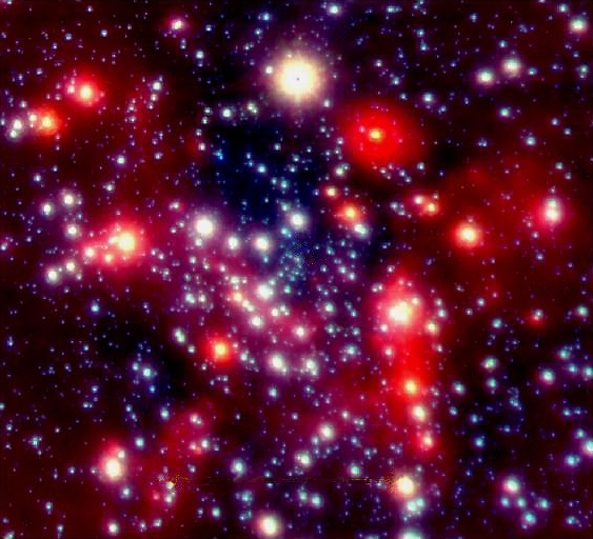
ESO · CC BY 4.0Forty years of capture
From the Sun to neutron stars
1985
Press & Spergel
capture of WIMPs by the Sun
1987
Gould
the capture-rate formalism
1989
Goldman & Nussinov
WIMPs and neutron stars
2008–10
Kouvaris; Kouvaris & Tinyakov
heating by annihilation; collapse to a black hole
2017
Baryakhtar et al.
dark kinetic heating
2020
Bell et al.
relativistic capture with Pauli blocking, opacity, multiple scattering
2026
OBSCURA
collision histories through the interior metric
Gravitational focusing · the calculation
The orbit must reach the surface
- Outside the star, two constants: ℰ = (1 − 2M/r) ut, ℒ = r²uφ. From infinity, ℰ = γ and ℒ = γvb.
- uμuμ = −1 leaves one dimension: (ur)² = ℰ² − V², with V² = (1 − 2M/r)(1 + ℒ²/r²).
- No turning point before the surface: ℰ² ≥ V²(R), with C = M/R.
- That caps the angular momentum: ℒc = R [(ℰ² − 1 + 2C)/(1 − 2C)]1/2.
Exact for C ≤ 1/4. Above that, slow particles meet the barrier outside the star and ℒc → 4M.
Gravitational focusing
The star looks a thousand times wider
Supply × probability
What reaches the star, and what stays
ℰ and ℒ are the energy and angular momentum per unit mass, measured at infinity; between collisions they are conserved, and the particle follows the interior geodesic.
Captured
after a collision the particle can no longer reach infinity: γ is its Lorentz factor for a static observer at the collision, eν/2 the lapse there.
The optical-depth closure
A Poisson count and three frozen choices
The closure of Sirvente & Rueda (submitted): relativistic and covariant. OBSCURA was built to test it, not to replace it — and reduces to it exactly.
1 · Frozen trajectory
Collisions change the energy, never the path: every particle keeps the incident geodesic.
2 · Deterministic loss
Each collision removes a fixed amount — head-on or the isotropic mean — so capture needs exactly Nmin of them.
3 · Evaluated at the surface
Nmin is computed with the lapse at R, wherever the collision actually happens.
100 keV on a neutron of 939 MeV
Capture decided in a narrow window
For mχ ≪ mn each collision removes a fraction ~2(mχ/mn)(γ + 1) ≈ 5×10⁻⁴ at most, while it must lose up to a per cent of it: tens of collisions.
Deeper in the star the lapse is smaller and the same collision removes more of ℰ: Nmin halves at the centre.
Slide the mass to the GeV range: one collision suffices — the WIMP limit.
The transport
One history, collision by collision
- Draw a target optical depth −ln U and fly along the interior geodesic with (ℰ, ℒ) conserved, accumulating dτ = nbσ dl (step R/4096).
- At the collision, an elastic two-body event on a neutron at rest, isotropic in the centre of mass: energy loss and deflection from the same angles.
- New γ and direction → new (ℰ, ℒ): the orbit is rebuilt.
- Captured if ℰ < 1; escaped if it leaves unbound; otherwise fly again.
Every approximation has a name
GEO-8 interior tetrad transport · COL-3 relativistic event · PAULI-1 blocked rate · STAT-1 Wilson intervals — each documented, cited in the source, and switchable.
Switch off the release, the sampling and the local lapse, and the Monte Carlo is the closure.
Three modes, one star · live
Releasing the trajectory broadens the transition
Reduction
Switch it off, and it is the closure
| switch off | recovers |
|---|---|
| trajectory update at collisions | the incident geodesic of τ |
| sampled energy loss | the recurrence behind Nmin |
| loss at the collision radius | the cascade at the surface lapse |
| histories beyond one crossing | the single-crossing convention |
| neutrons at rest in the rate | not switched: up to 0.035 in Pcap |
Nmin
every capture of the realised closure happens at exactly Nmin
0.2%
mean count vs σ∫nbdl by an independent quadrature
2.8σ
largest deviation of Pcap from the Poisson tail, 123 points × 5000 histories
10⁻¹⁰
a sampled event vs an independent closed form; head-on = one step of the recurrence
The decomposition · 2³ × 2 controls, order-averaged
Two effects of opposite sign
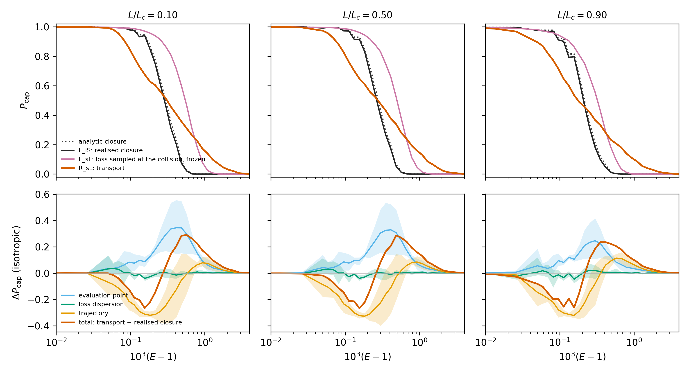
| switch | mean ΔPcap |
|---|---|
| ● evaluation point | +0.09 … +0.14 |
| ● loss dispersion | |·| < 0.01 |
| ● trajectory | −0.09 … −0.11 |
| total (signed mean) | +0.00 … +0.03 |
| total, RMS over the transition | 0.16 … 0.17 |
They nearly cancel in the mean but not in shape: the first shifts the transition up, the second broadens it. Single energies differ by up to ±0.29.
An attribution with interactions, not three independent corrections.
Mechanism · what the first collision does
Half the particles turn back
48–53%
leave the first collision moving outward — frozen chord: 2–8%
≈ 3.1
mean column left to the surface, spread over 0.2–6.6 (10–90%) — frozen: 4.4–6.5, narrow
16–28%
never collide again — frozen: at most 3%
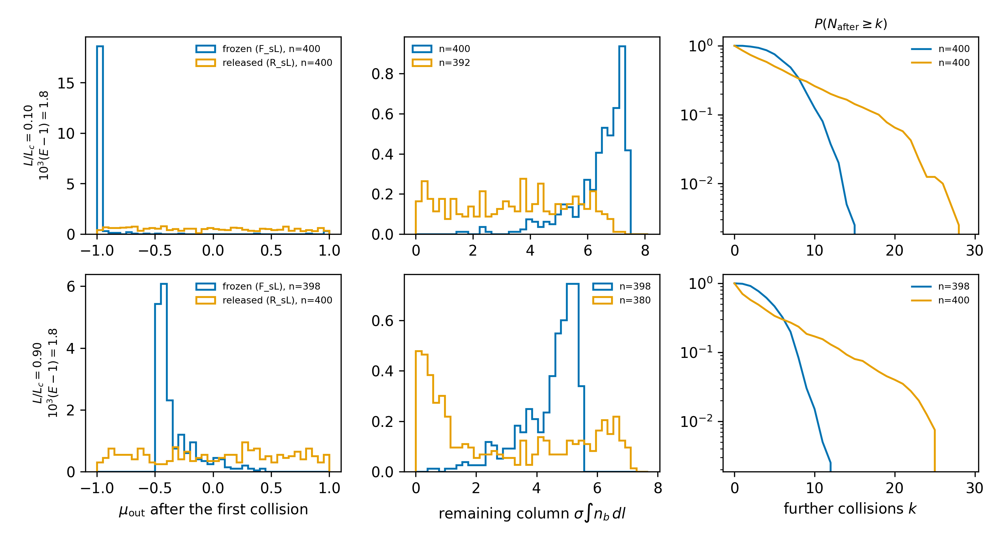
How many collisions · live
A count that is not Poisson
Above the transition almost nothing is captured, so each count is complete: the history ends when the particle leaves. The closure assumes Poisson with the mean τ. The mean is right; the shape is not.
In the paper: variance 8–13 times the mean. This is a random walk out of an optically thick sphere, not a straight chord.
Count-law closures · calibrated and tested out of sample
Better laws, honest residuals
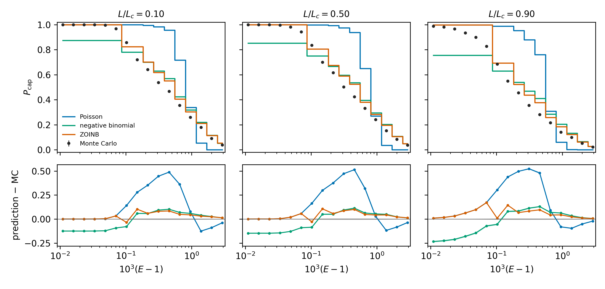
| mean |prediction − MC| | our SLy | benchmark |
|---|---|---|
| Poisson, measured mean | 0.15–0.19 | 0.16–0.18 |
| negative binomial | 0.08–0.11 | 0.057–0.064 |
| zero-and-one-inflated NB | 0.035–0.057 | 0.044–0.064 |
Calibration and test share no histories. The zero-and-one-inflated form removes the spurious zero-collision mass of the plain NB.
Residuals stay 6–23 times the combined Monte Carlo and calibration errors: closed forms that help, tested at fixed parameters — not yet a transferable law.
A more compact star · SLy at maximum mass, 2.05 M☉
Broadening is not a detail
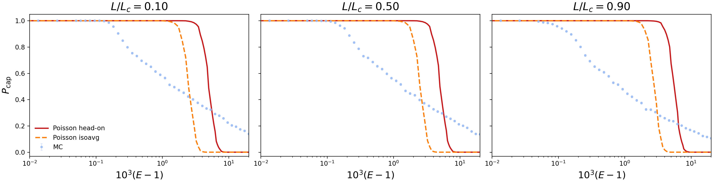
Optical depth of the closure: τ ≈ 25–27, three times the canonical star.
The transport already falls below 0.95 at 10³(ℰ − 1) = 0.1–0.2, and keeps 11–14% at 20, where both closures vanish.
Mean |difference| from the isotropic-mean closure: 0.28–0.29; single energies up to 0.6–0.7.
Same five particles · different stars
The equation of state decides the fate
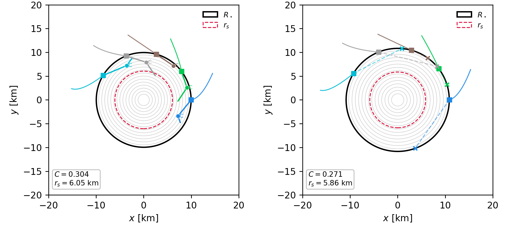
Five incident particles, the same phase-space points, sent into the maximum-compactness stars of a hadronic (SLy) and a strange-quark (SQM3) equation of state.
The same orbit crosses a different column and collides at a different depth: five captures against none.
Selected cases, not an ensemble average — an illustration of where the EOS dependence of Pcap comes from.
Beyond the benchmark
Pauli blocking and cooling
Pauli blocking · implemented, not yet in the campaigns
The recoiling neutron must leave the Fermi sea: the blocked optical depth is 7×10⁻⁵ of the unblocked one.
But the collisions that do happen are violent: on average 57% of the kinetic energy, against 2×10⁻⁴ for a static target.
So a blocked τ can never be paired with a static Nmin: both must come from the same blocked kernel. The hierarchy has to be measured again, not rescaled.
Rate tabulated in (ln nb, ln(γ − 1)) to 10⁻³, the Fermi-surface shell of width ~3×10⁻⁴ resolved by bisection.
Cooling to 3kT/2 · after capture
| 10⁷ K | 10⁸ K | |
|---|---|---|
| collisions to capture | 5 | 5 |
| collisions to the threshold | 4494 | 1374 |
| re-entries into the star | 396 | 191 |
| coordinate time | 5.1 s | 6.8 s |
| time spent outside the star | 97% | 99% |
Medians. A first-passage time in a cooling-only model — no heating, no detailed balance: not thermal equilibrium.
Under the hood
Validated stage by stage
| check | agreement |
|---|---|
| interior transport vs independent orbit quadrature (path, azimuth) | 1–2×10⁻⁴ |
| Pcap with the step refined from R/4096 to R/16384 | ≤ 2×10⁻⁴ |
| exterior periapsis vs analytic turning point | < 1.4×10⁻¹³ |
| GR / Newtonian focusing at v → 0 | 1.244 |
| surface hits: quadrant asymmetry, 10⁶ samples | 3×10⁻³ |
| CPU vs CUDA, 60 cases × 10⁵ histories | 4.5×10⁻³ |
| population equation vs N = Cχt | 10⁻¹⁶ |
| Fermi EOS: Γeff at the two ends | 1.6667 · 1.3333 |
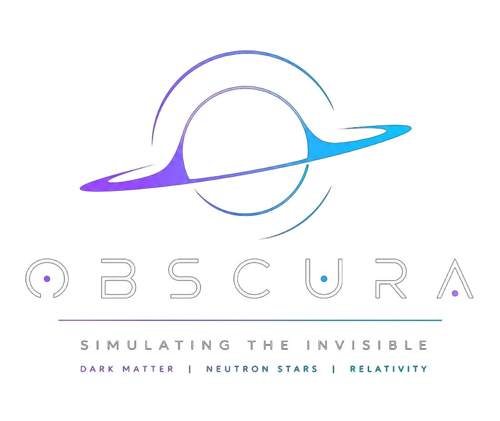
3
independent implementations of the Nmin recurrence, same integers
425
assertions in 26 test suites
C++17 with OpenMP; the same engine compiled to WebAssembly for an interactive lab.
Part II · in short
What the closure misses
- The Monte Carlo reduces exactly to the Poisson closure when its released ingredients are switched off.
- Where the loss is evaluated and whether the trajectory is released move Pcap by ±0.1 each, in opposite directions: right on average, 0.16–0.18 RMS off in shape.
- Collision counts are strongly overdispersed; negative-binomial laws calibrated out of sample do much better than Poisson.
- Pauli blocking changes rate and kernel together: it must be measured, not rescaled.
A correct mean number of collisions is not enough for a Poisson closure.
III
Part three
Degeneracy before
self-gravity
A captured population can be far too light to change the star — and still too dense to be a classical gas. Two diagnostics, and a map of where their thresholds fall.
The question
After capture, what is it?
A classical tracer
The usual assumption: the particles thermalise into a Boltzmann cloud in the fixed potential of the star. Right for a dilute gas.
A degenerate tracer
Fermions in a deep well can reach a phase-space density where Pauli matters — while still too light to change the gravity.
A dark component
Dark-matter admixed neutron stars: the dark fluid takes part in hydrostatic balance and shifts the mass–radius relation.
Two independent diagnostics
One for gravity, one for statistics
| S | regime | omitted gravity S/(1 + S) |
|---|---|---|
| < 10⁻³ | tracer | < 10⁻³ |
| 10⁻³ – 10⁻¹ | transitional | up to 9% |
| ≥ 10⁻¹ | self-gravitating | ≥ 9% |
Local, not the global Mχ/M★: rχ = r90 holds 90% of the particles.
| Θ | regime | Fermi share 1/(1 + Θ) |
|---|---|---|
| > 10 | thermal | < 0.09 |
| 0.1 – 10 | transitional | 0.09 – 0.91 |
| < 0.1 | degenerate | > 0.91 |
There is no general reason for the two sets of thresholds to coincide.
The two closures
A Boltzmann cloud, and the Fermi limit
The cloud has no edge: r90 ignores the dilute tail and measures where the particles actually are.
Θ is a diagnostic ratio, not a finite-temperature chemical potential: it says when a Fermi–Dirac treatment is needed.
The two diagnostics · live
Move a cloud through the plane
Dashed lines: the thresholds S = 10⁻³, 10⁻¹ and Θc = 10, 0.1. The bands between them are transitional.
Why the thresholds do not coincide · a back-of-the-envelope
Pauli comes first for light particles
A compact cloud sits in the harmonic core, ΔΦ = (2π/3)Gρcr². Its size cancels between S and the central density:
Light particles are many per gram: they fill phase space long before they weigh anything.
| particle, core | S at Θc = 1 |
|---|---|
| 1 keV, 10⁶ K | 10⁻²⁴ |
| 100 keV, 10⁹ K | 10⁻¹⁴ |
| 1 GeV, 10⁵ K | 10⁻¹¹ |
| 1 GeV, 10⁷ K | 10⁻⁸ |
| 1 TeV, 10⁵ K | 10⁻⁴ |
Self-gravity starts at S ~ 10⁻³. For anything lighter than about a TeV, the gas turns degenerate first.
Full thermal profile in the SLy star, as in the previous panel.
The pipeline
From the star to the diagnostics
The order matters: capture supplies the particle budget, S tests whether the fixed gravitational background is adequate, Θ tests whether the classical closure is.
The fiducial population · after 10⁹ years
Gravitationally invisible, not quite classical
| Maxwell–Boltzmann | RAR–FD | |
|---|---|---|
| incidence rate Γinc | 4.36×10²⁹ s⁻¹ | 2.33×10²⁹ s⁻¹ |
| capture fraction fcap | 0.962 | 0.959 |
| captured particles Nχ | 1.32×10⁴⁶ | 7.06×10⁴⁵ |
| captured mass Mχ | 2.36×10¹⁸ g | 1.26×10¹⁸ g |
| cloud radius | 11.3 km (r90) | 11.7 km (support) |
| self-gravity S | 6.4×10⁻¹⁶ | 3.8×10⁻¹⁶ |
| classicality Θc | 3.46 | 5.07 |
Fiducial: mχ = 100 keV, σ = 10⁻⁴⁴ cm², ρχ = 0.4 GeV cm⁻³, Tcore = 10⁹ K, t = 10⁹ yr, SLy 1.40 M☉.
Mχ/M★ ≈ 10⁻¹⁵: no mass–radius shift to look for. Yet Θc ≈ 3–5 is in the transitional band: corrections of order one to Boltzmann.
Changing the halo from MB to RAR–FD changes the supply by 47% and the microscopic capture by 0.3%.
The regime map · every model of the survey
The two boundaries do not coincide
I
Boltzmann tracer
the usual assumption
II
Boltzmann, self-gravitating
heavy, classical, massive
III
Fermi tracer
degenerate, gravitationally passive
IV
Fermi, self-gravitating
toward a dark core
Reading the map
Two slopes, one Fermi energy
Hold mχ, σ, t, T fixed and change ρχ: the profile keeps its shape, S ∝ n0 ∝ Nχ, and pF ∝ n01/3:
| RAR–FD survey | tracks | points | median slope |
|---|---|---|---|
| non-relativistic family | 352 | 2112 | −0.667 |
| relativistic family | 213 | 1278 | −0.334 |
The mass trend
Heavier particles are less degenerate: d log Θc/d log mχ ≈ 0.49 (MB) and 0.42 (RAR–FD). The degenerate quadrants hold 85–89% of the lightest models and 21–28% of the heaviest.
Not a change of particle
III → IV is the same Fermi gas becoming heavier where it sits: the growth of S, not of the particle mass.
MB vs RAR–FD: corr(log S, log Θc) = −0.652 vs −0.154.
What comes next
The right model for each quadrant
I
S ≪ 1, Θ ≫ 1
a Boltzmann cloud in the fixed star — the standard assumption, justified
II
S ≳ 0.1, Θ ≫ 1
classical, but it shapes its own potential
III
S ≪ 1, Θ ≲ 1
a capture-normalised Fermi tracer in the fixed star — finite-T if Θ ~ 1–10
IV
S ≳ 0.1, Θ ≪ 1
only here: a two-fluid TOV, the dark-matter admixed star
Capture calculations and admixed-star models are not interchangeable endpoints. A small Mχ/M★ or S says the structure is unchanged; it does not justify a Boltzmann profile.
Not yet included
Annihilation heating, collapse and black-hole formation, rotation, magnetic fields, and a self-consistent time evolution of the captured Fermi gas. Θ is a diagnostic, not a finite-temperature solution.
Conclusions
Capture, then character
- OBSCURA follows dark-matter collision histories through the interior metric and reduces exactly to the optical-depth closure.
- At 100 keV, the frozen trajectory and the surface evaluation each move Pcap by ~0.1, in opposite directions; the count of collisions is overdispersed.
- After capture, S and Θ answer different questions: the fiducial population is an extreme tracer (S ~ 10⁻¹⁶) in the transitional band (Θc ≈ 3–5).
- For light particles degeneracy comes before self-gravity: the thermalised-WIMP assumption has to be tested in (S, Θ), not by Mχ/M★.
Next steps
- Pauli-blocked capture campaigns with the consistent blocked kernel.
- Capture rates over the full incident phase space, RAR halo included.
- Thermalisation with heating and detailed balance, then a finite-T Fermi tracer.
- Two-fluid structure once S leaves the tracer regime.
The panels in this seminar run in the browser, on the same physics as OBSCURA: rafael-lima.pages.dev/talks.
Image credits
Freely licensed photos and figures
Bullet Cluster, 1E 0657−56 — NASA/CXC/M. Weiss · public domain

Fritz Zwicky, 1960 — Comet Photo AG (Zürich), ETH-Bibliothek · CC BY-SA 4.0

Vera Rubin — AIP Emilio Segrè Visual Archives, AIP Gallery of Member Society Presidents · attribution
.jpg){kind=link}
Coma Cluster — CTIO/NOIRLab/DOE/NSF/AURA, image processing D. de Martin & M. Zamani · CC BY 4.0
.jpg){kind=link}
Cosmic microwave background — ESA and the Planck Collaboration · CC BY 4.0
.jpeg){kind=link}
NGC 3198 — Sloan Digital Sky Survey · CC BY 4.0

The centre of the Milky Way — ESO · CC BY 4.0

Neutron star over Manhattan — NASA's Goddard Space Flight Center · public domain
Paper figures — de Lima & Rueda, A Monte Carlo relativistic framework for dark matter capture by neutron stars (in preparation); de Lima & Rueda, Degeneracy Before Self-Gravity: Dark Matter Regimes in Neutron Stars (draft)
Data in Part I — RAR model: solved in the browser after Argüelles et al., PDU 21, 82 (2018); rotation curve: SPARC (Lelli, McGaugh & Schombert 2016); CMB: Planck 2018 and CLASS v3.4.1 (Blas, Lesgourgues & Tram 2011); direct-detection and axion limits: compilations by C. O'Hare (DirectDetectionPlots; AxionLimits, Zenodo 3932430), neutrino fog: O'Hare 2021
Regime-map panel — the survey data of the second paper, from the OBSCURA pipeline
Neutron star — SLy equation of state (Douchin & Haensel 2001) in the piecewise-polytropic fit of Read, Lackey, Owen & Friedman, PRD 79, 124032 (2009)
OBSCURA logo — OBSCURA project
Thank you
Questions?
Slides and live panels, on the same physics as OBSCURA, at rafael-lima.pages.dev/talks